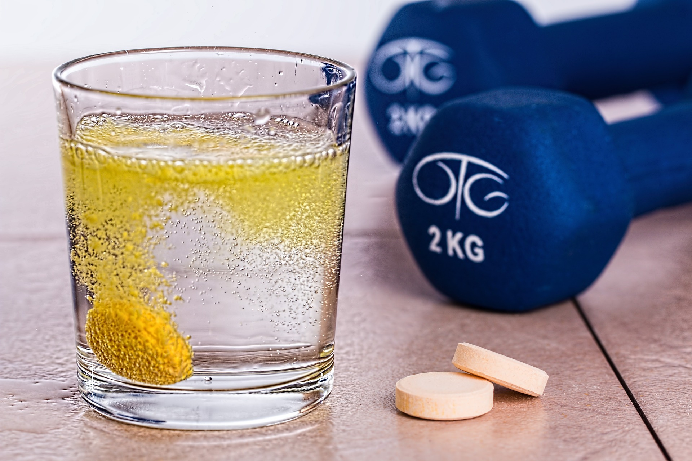

Todos los cuerpos o sustancias de la naturaleza se caracterizan por su masa, peso, volumen, densidad y estado de agregación o fase. Por ello, es muy importante no confundir los conceptos de las características anteriores y manejarlos adecuadamente. En este artículo se presenta con detalle cada uno de ellos y se brindan ejemplos.
Un gran científico italiano Galileo Galilei (1564-1642), mediante la experimentación con planos inclinados, descubrió que un objeto como una esfera, al descender por una rampa y desplazarse sobre una superficie horizontal, se mantendría en movimiento sin necesidad de que ninguna fuerza lo impulsara. Razonó que si se pudiera eliminar la fricción de la esfera con el aire y con la superficie sobre la que rodaba, se mantendría indefinidamente en un movimiento rectilíneo con rapidez constante, sin ser empujada o jalada. Galileo notó que los objetos en movimiento tienden a conservar el movimiento y que los objetos que están en reposo tienden a permanecer en reposo. A esta propiedad de los cuerpos a mantener su estado de reposo o movimiento se le llama inercia. Nótese que la inercia no es una fuerza, sino una propiedad de los objetos a resistir los cambios en su estado de movimiento. La cantidad de inercia que posee un cuerpo depende de su cantidad de materia: cuanta más materia tenga, habrá más inercia, y viceversa. A la cantidad de materia se le llama masa. Cuanta mayor masa tenga un cuerpo, más inercia tendrá. Un balón de futbol poseerá menos masa o inercia que un costal de arena. Estando en reposo, es mucho más fácil poner en movimiento el balón que el costal de arena. Por lo tanto, la masa es una medida de la inercia de un cuerpo. ¡Pero cuidado!, no confundamos la masa con el peso de un cuerpo.
El peso es una fuerza que depende de la atracción gravitacional hacia la Tierra y se expresa como p = mg, donde g es una constante que representa la aceleración que sienten todos los cuerpos que se encuentran en la superficie terrestre o cerca de ella. Las fuerzas se miden en newtons, mientras que la masa se mide en kilogramos.
La masa y el peso de un cuerpo son proporcionales a una misma altitud sobre el nivel del mar. Si se duplica la masa de un cuerpo, su peso también lo hará; si la masa se reduce a la mitad, el peso disminuirá en la misma proporción (quizás por esta razón se maneja ordinariamente el peso en kilogramos). No obstante, la masa es una propiedad intrínseca de los cuerpos, que no depende de la gravedad. La masa de tu cuerpo es la misma aquí en la Tierra que en la Luna o en Júpiter, no cambia; no así tu peso. En la Luna, tu peso es mucho menor de lo que es aquí en nuestro planeta, ya que la masa de la Luna es inferior a la de la Tierra, por ello, la constante g es mucho menor de lo que vale en la Tierra. En contraste, tu peso sería más grande en Júpiter, ya que la masa de éste es más grande que la masa de nuestro planeta. Recordarás los videos de los astronautas que estando a cientos de kilómetros de la Tierra, prácticamente flotan casi ingrávidos.
El volumen de un cuerpo es una medida del espacio que ocupa. Vivimos en un espacio de tres dimensiones, por lo tanto, el volumen es una medida tridimensional que generalmente se obtiene al multiplicar tres longitudes: largo, ancho y altura o grosor.
El volumen se mide en unidades de longitud al cubo, tales como centímetros cúbicos, metros cúbicos, o en litros. Un litro es equivalente a un decímetro cúbico (ver figura 1), en otras palabras, un litro equivale al volumen de un cubo de diez centímetros por lado. Los litros son subunidades del metro cúbico. Considerando que cada metro tiene diez decímetros, entonces cada metro cúbico tiene: 10 dm × 10 dm × 10 dm = 1000 litros. Generalmente, el volumen de grandes cantidades de agua, como el de los tinacos de agua que se utilizan en los departamentos o en las casas, o el de las albercas o piscinas, se mide en metros cúbicos. Si la forma del cuerpo no es regular, de tal modo que su volumen no se puede calcular mediante una fórmula, existen métodos indirectos, como sumergir el cuerpo dentro de un recipiente con un líquido como el agua y medir el cambio del volumen del líquido, o medir directamente cuánta agua le cabe en su interior, recordando que cada kilogramo de agua representa un litro.
De acuerdo con lo dicho, es claro que medir cuántos kilogramos de masa tiene un cuerpo y cuál es su volumen son cosas diferentes. Un objeto con una masa grande puede tener o no un gran volumen. Por ejemplo, considérese que se tiene un trozo de madera y otro trozo de metal del mismo volumen, ¿acaso tienen la misma masa? Otro ejemplo interesante es una esponja, que si no está comprimida, ocupa un determinado volumen, pero al comprimirla ocupa un volumen menor; sin embargo, en los dos casos la masa de la esponja no cambia.
Esto nos lleva a hablar de la densidad de un cuerpo, misma que se define como el cociente entre la masa y el volumen, en otras palabras, es la cantidad de materia por unidad de volumen. La densidad es como la ligereza o la pesadez de materiales del mismo tamaño; por ejemplo, compara una pelota de esponja con una pelota de unicel de volúmenes similares. La densidad se define como:
Densidad = masa / volumen
El agua a 4 °C tiene una densidad de 1.00, ya que 1 gramo de agua ocupa un volumen de 1 centímetro cúbico. Si en un tanque de agua tuviéramos objetos de diferente densidad como madera, corcho, piedra, tornillo de fierro, aquellos con una densidad menor a la del agua como es el caso de la madera y el corcho tenderían a flotar, a diferencia de la piedra y el tornillo de fierro, que se hundirían.
Nuestro cuerpo tiene una densidad ligeramente arriba de 1; por ello, si nos sumergimos en una alberca de agua dulce, tendemos a hundirnos, pero en el mar, que contiene sales y cuya densidad es ligeramente superior a 1, nos cuesta menos esfuerzo mantenernos a flote; es más, en un mar con alto contenido de sal como el Mar Muerto, nos resulta muy fácil flotar.
Por la densidad del helio, inferior a la del aire seco a temperatura ambiente, los globos inflados con ese gas tienden a ascender.
Es muy fácil flotar en las aguas del Mar Muerto, consecuencia de su alta salinidad
Ahora entenderás que lo correcto para distinguir un objeto pesado de un ligero, es referirse a su densidad y no a su peso en general, sin señalar un volumen determinado. Por ejemplo, si preguntamos: ¿qué pesa más, la madera o el fierro?, sin pensarlo mucho alguien diría que pesa más el fierro, pero qué tal si el cuerpo de madera es grande y el cuerpo de fierro es pequeño.
Hablemos enseguida de los estados de agregación, también llamados fases. Toda la materia se encuentra en uno de los cuatro posibles estados de agregación o fases: gaseoso, líquido, sólido y plasmático. En general, los estados más recurrentes en nuestro mundo cotidiano son el gaseoso, el líquido y el sólido. Ejemplos comunes de estos tres estados son el aire que respiramos, el agua que bebemos y un clavo de fierro. El estado de plasma es el que se obtiene cuando las moléculas y átomos que forman una sustancia se rompen o desintegran en iones y electrones como sucede dentro de una estrella como el Sol.
Las transformaciones de los estados de agregación o fases dependen de la temperatura y de la presión. Si calentamos un sólido como un pedazo de hielo manteniendo constante la presión, por ejemplo la existente en la Ciudad de México, el hielo empezará a derretirse y a pasar del estado sólido al estado líquido. Si se sigue aumentando la temperatura, el agua líquida empezará a evaporarse por lo que pasará del estado líquido al estado gaseoso. En otras palabras, incrementando la energía interna de las moléculas y átomos de una sustancia se podrá transitar de un estado de agregación a otro. Estos cambios también pueden ocurrir a la inversa, es decir, manteniendo la presión constante, pero ahora disminuyendo la temperatura, se pasa del estado gaseoso al estado líquido y de éste al estado sólido.
Los cambios de estado de agregación o de fase que ocurren en la materia reciben nombres especiales. Cuando una sustancia transita de la fase sólida a la líquida, se habla de fusión; si el cambio de fase se da al revés, o sea, de fase líquida a sólida, se trata de congelación o solidificación. Si una sustancia pasa del estado líquido al gaseoso, se habla de evaporación; y el cambio inverso, de gas a líquido, se denomina condensación. Existe la posibilidad, en condiciones especiales, que una sustancia en estado sólido llegue al estado gaseoso, sin hacerse líquida, en este caso se habla de sublimación; y el proceso inverso, de estado gaseoso a sólido, se denomina cristalización o sublimación inversa.
Los cambios de estado de agregación o fase se pueden alterar por la presión. Es posible modificar las temperaturas a las que una sustancia cambia de fase, aumentando o disminuyendo la presión. Por ejemplo, a nivel del mar, el agua pura hierve a 100 °C (transformación de la fase líquida a la fase gaseosa). En un lugar de mayor altitud, como la Ciudad de México, que se encuentra a 2200 metros sobre el nivel del mar (msnm), la presión atmosférica disminuye y la temperatura de ebullición desciende a 92.6 °C. En lugares de altitud aún mayor, como el Popocatépetl (5465 msnm) y el monte Everest (8848 msnm), el agua hierve a 82 °C y a menos de 70 °C, respectivamente.
Si, por el contrario, se tuviera un volumen de agua en un recipiente cerrado y se aumentara la presión interior por arriba de la presión atmosférica al nivel del mar, la temperatura a la que herviría el agua sería superior a los 100 °C. Este es el caso de la olla de presión u olla exprés, donde el punto de ebullición del agua sube a tal grado que el agua alcanza temperaturas superiores a los 100 °C sin convertirse en vapor. De esta forma, se acelera el tiempo de cocción de los alimentos.
En todos los casos, cuando una sustancia cambia de fase, los átomos y moléculas que forman las sustancias siguen siendo los mismos, lo que cambia son las interacciones y las distancias entre ellos, así como su grado de agitación.
La densidad está relacionada con los estados de agregación. En general, la densidad es menor en la fase gaseosa, mayor en la fase líquida y aún mayor en la fase sólida.
Esperamos que a partir del texto anterior, hayas conocido un poco más de estas propiedades de los cuerpos tan importantes como su masa, peso, volumen, densidad y estado de agregación. Sin duda, es fascinante conocer mejor los cuerpos que nos rodean y, desde luego, la naturaleza en la que estamos inmersos.
{kind=link}